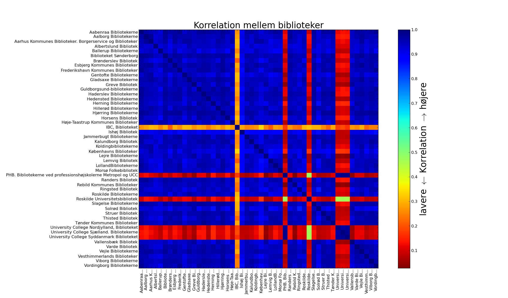

Hvad adskiller de forskellige biblioteker? Er der forskel på udlånet blandt biblioteker i Storkøbenhavn og de store provinsbyer i forhold til kommuner med forholdsvis små byer?
Overstående plot viser sammenhængen mellem forskellige biblioteksvæsener. Blå elementer viser en høj grad at sammenhæng mellem biblioteker på baggrund af de titelord på materialer der bliver lånt.
Til data-nørder kan det fortælles at for hvert biblioteksvæsen er ord fra materialetitlen (f.eks. bogtitlen) udtrukket fra de 47 millioner udlånsdata og en data-matrix hvor rækkerne svarer til ord og kolonner svarer til biblioteksvæsener. Plottet viser korrelationsmatricen.